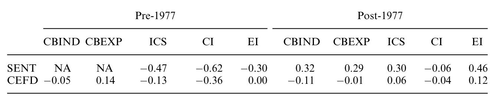
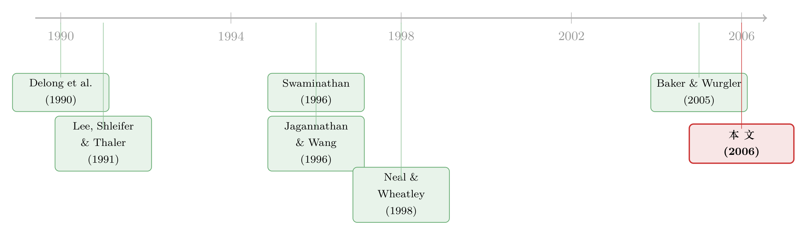

情绪，能不能从「基本面」里干净地剥出来？
本文读的是 Lemmon & Portniaguina (2006, Review of Financial Studies)：作者把美国家喻户晓的「消费者信心」当作投资者乐观情绪的代理变量，先用宏观基本面把它「洗」一遍，再用残差去预测小盘股溢价——结果发现，当这股「无法被基本面解释的乐观」越高，随后小盘股、以及低机构持股股票的收益就越低，方向与噪声交易者模型的预言完全吻合；但这层关系只在最近 25 年的样本里成立。
1 一个绕不开的麻烦：情绪到底怎么量？
行为金融学有一个讲了三十年、却始终没讲利索的故事：市场上有一群「噪声交易者 (noise traders)」，他们的乐观与悲观不是基于基本面，而是基于一种说不清道不明的情绪；当套利受限时，这股情绪会把某些资产的价格推离其内在价值，并维持相当长一段时间。Delong, Shleifer, Summers, and Waldman (1990) 把这套逻辑写成了模型——如果噪声交易者的情绪是相关的（大家一起乐观、一起悲观），那么被他们扎堆持有的资产，价格就会系统性地偏离基本面。
这套理论有一个非常干脆的可检验预言：情绪越高，那些被噪声交易者重仓的股票，未来收益越低——因为错误定价终将被纠正。
但问题来了。要检验它，你得先有一把尺子去量「情绪」。而情绪偏偏是这世上最难量的东西之一。过去二十年，这条文献几乎把全部赌注押在了一个变量上：封闭式基金折价 (closed-end fund discount, CEFD)。Lee, Shleifer, and Thaler (1991) 的经典做法是——封闭式基金主要由个人投资者持有，当散户悲观时折价扩大，所以折价就是情绪的温度计。
可这把尺子并不让人放心。Chen, Kan, and Miller (1993)、Doukas and Milonas (2002) 都质疑过：折价里到底有多少是情绪，有多少只是基本面（比如对未来盈利和通胀的预期，见 Swaminathan (1996)）？尺子本身就被基本面污染了，量出来的「情绪」自然可疑。
于是，一个自然的问题是：有没有一个更直接、更干净的情绪代理，能让我们把「基本面」那一部分明明白白地剔出去？
这正是本文的切入口。
2 把信心拆成两半
作者找来的尺子，是美国每个月都上头条的两份消费者调查：一份是世界大型企业联合会 (Conference Board) 的消费者信心指数 (Index of Consumer Confidence, CBIND)，另一份是密歇根大学调查研究中心的消费者情绪指数 (Index of Consumer Sentiment, ICS)。这两份问卷各问五个问题，问的无非是「你和家人现在的财务状况比一年前好还是坏」「未来 12 个月经济会变好还是变坏」「现在是不是买大件家电的好时候」之类。
为什么信心可以当作情绪？因为已有大量证据表明，信心里既有理性的成分，也有非理性的成分。一方面，Carroll, Fuhrer, and Wilcox (1994)、Bram and Ludvigson (1998) 发现消费者信心能预测未来的家庭支出，CBIND 更是被列入十大领先经济指标——说明它确实含有对未来经济的真实信息。另一方面，Doms and Morin (2004) 发现，在控制经济基本面之后，信心还会对经济新闻的语气和报道量做出反应，而非只对经济内容反应——这就是情绪的指纹。
既然信心是「基本面 + 情绪」的混合物，那思路就清楚了。本文的核心做法，可以用一行回归概括：
$$ \text{Confidence}_t = a + b' \, X_t + \varepsilon_t $$
这里 \(X_t\) 是一大组宏观基本面变量——GDP 增长、消费增长、劳动收入增长、失业率及其变化、违约利差 (DEF)、短期国债收益率 (YLD3)、股息率 (DIV)、通胀率 (CPIQ)、消费-财富比 (CAY) 等等。作者把这个回归的 \(R^2\) 做到了大约 0.8，可即便如此，仍有相当一部分信心无法被基本面解释。
而真正关键的一步，就在这里：
$$ \widehat{\text{Sentiment}}_t \;\equiv\; \hat{\varepsilon}_t \;=\; \text{Confidence}_t - \big(\hat{a} + \hat{b}'X_t\big) $$
残差 \(\hat{\varepsilon}_t\) 就是作者定义的情绪成分 (sentiment component)——那部分「基本面交代不了的乐观或悲观」。这是全文的支点：用一个直接的调查数据，硬生生把「理性预期」和「非理性情绪」切成两半。
当然，作者自己也坦承这套做法的软肋：你必须先选定一个信息集（即 \(X_t\) 里放哪些变量），才能完成这种分解。放进去的基本面变量不同，剥出来的「情绪」也不同。所以他们尽可能把 \(X_t\) 做大，并把这件事老老实实写在了正文里。
3 识别策略：先让 beta 动起来，再看 alpha
剥出情绪之后，怎么检验噪声交易者模型？作者盯住的标的，是教科书里最经典的那条多空组合：
$$ R_{M110,t} = R_{\text{smallest decile},t} - R_{\text{largest decile},t} $$
也就是 CRSP 最小市值十分位组合的收益，减去最大市值十分位组合的收益——即小盘股溢价 (size premium)。选它是有道理的：Lee, Shleifer, and Thaler (1991) 与 Nagel (2005) 都表明，小盘股不成比例地由个人投资者持有，而个人投资者恰恰最容易被情绪左右。
但这里藏着一个识别上的陷阱，也是本文方法论上最讲究的地方。
Jagannathan and Wang (1996) 提出过一个完全理性的反方解释：处在边缘、财务困境概率更高的小公司，其条件市场 beta 对商业周期更敏感。如果低信心预示着未来经济衰退，那么小盘股的 beta 本就会在低信心之后上升，从而它们的预期收益也理应上升——这一切都不需要任何「情绪」。
所以，如果你只是简单地拿情绪去预测小盘股溢价，哪怕跑出了显著结果，也分不清那到底是「情绪导致的错误定价」，还是「beta 随周期变化导致的理性补偿」。
本文的处理是：先让 beta 随基本面动起来。作者验证了理性那一面——这个多空组合的条件市场 beta 确实会在低信心的季度之后上升，与 Jagannathan-Wang 的逻辑一致。但关键在于，在允许条件 beta 随宏观变量时变之后，再去看剩下的定价误差（pricing error）：
$$ R_{M110,t+1} = \alpha + \beta_t \, R_{MKT,t+1} + \gamma\, \widehat{\text{Sentiment}}_t + u_{t+1} $$
如果 \(\gamma\) 仍然显著为负，那就说明：在把「会看天的 beta」这一理性渠道控制掉之后，情绪依然在压低小盘股的未来收益——这才是噪声交易者模型真正想要的证据。（关于「时变 beta 被低估」这件事本身，可参见《时变的 beta，被低估了二十年的风险》。）
结果正是如此：定价误差与信心的情绪成分负相关——当情绪成分高时，随后小盘股相对大盘股的收益更低。而且这个负向关系，对「让 beta 随更多宏观变量变动」「再加入账面市值比因子 (HML) 和动量因子 (MTM)」都很稳健。
4 数据与那条「只活在近 25 年」的暗线
先把数据交代清楚。样本为季度观测，区间 1956(Conference Board 从 1967)–2002。观测单位是季度组合收益。两份调查在 1977–1978 年间都从低频转为月度采样，作者据此把样本切成两段：1956–1977 与 1978–2002。宏观变量取每季度第 3、6、9、12 月，信心取第 2、5、8、11 月——也就是用上一季末的信心，去预测下一季的收益。
几个值得记住的数字（来自描述统计）：小盘股溢价 M110 的均值在 pre-1977 是每季度 1.18%，到 post-1977 降到 0.61%；CEFD 折价均值从前期的 –30.04% 大幅收窄到后期的 –9.09%；低机构持股多空组合 IO110 在 post-1977 的均值约为每季度 1.11%。
现在说那条最耐人寻味的暗线。作者把样本分段检验后发现：信心情绪成分对小盘股溢价的预测力，只在最近 25 年的子样本里存在。 在更早的年代，这层关系并不成立。
为什么？作者给出的解释是：个人投资者在金融市场中的影响力随时间上升，从而在样本后段把情绪与股票收益更紧密地绑在了一起。这是个合理的故事，但也提醒我们——这条规律并非一条放之四海皆准的「定律」，它有自己的时代背景。
一个值得警惕的点：当一个结果只在「最近的子样本」里显著时，我们既可以把它读成「机制随时间增强」，也可以把它读成「这本来就是个对样本区间敏感的脆弱结果」。作者选择了前一种叙事，但两种可能在统计上很难被彻底分开。
5 顺手做的两件事：换尺子，与换标的
讲透了「情绪压低小盘股溢价」这个核心，作者又顺手做了两件强化它的事。
第一件，是把自己的尺子和别人的尺子放在一起比。 作者把信心里剥出的情绪成分，分别与封闭式基金折价 CEFD、以及 Baker and Wurgler (2005) 那个综合情绪指标做了对比。结论很微妙：在 1962–1977 年，情绪成分与 Baker-Wurgler 指数负相关；在 1978–2002 年两者对得上一些，但相关性都不大；情绪成分与 CEFD 的相关性在两段子样本里都很弱，符号还不稳定。更有意思的是——在 1977 年之后，一旦控制住基于信心的情绪度量，CEFD 对小盘股溢价就基本没有预测力了。换句话说，作者这把新尺子，盖过了行业沿用多年的那把旧尺子。

Table 5: compares our measure of the sentiment component of
第二件，是直接去检验那个被默认了二十年的前提假设。 整条情绪文献的逻辑基石，是「小盘股主要由散户持有、散户更易受情绪影响」。但小市值≠散户持有，这中间隔了一层假设。作者干脆绕开市值，直接用 Phalippou (2005) 的机构持股数据，构造了一条多空组合 IO110——做多机构持股最低十分位、做空机构持股最高十分位。结果：低机构持股的股票，在高（低）残差信心之后，收益更低（更高）。这就把「散户持有的股票更易被情绪错误定价」这件事，直接而非间接地检验了一遍。（关于散户究竟「栖息」在哪类股票上，可参见《散户的栖息地：他们不是更笨，只是去了别人不愿去的地方》。）
最后，作者还问了一句：情绪能不能预测价值和动量？答案基本是不能——基于信心的情绪度量对账面市值比因子和动量因子都没有显著预测力。深挖之下，高情绪只预示价值股的未来收益更低，但对成长股没有影响。这一点与 Baker and Wurgler (2005) 报告的「情绪与按账面市值比排序组合呈 U 形关系」不同——本文找不到那个 U 形。
6 文献脉络
这条研究的演进，是一条「不断为情绪寻找更干净尺子」的路。
最早是 Delong et al. (1990) 在理论上立住了噪声交易者的框架——情绪相关、套利受限，价格便会偏离基本面。接着，一个自然的问题是：到哪儿去找这股情绪的实证踪迹？Lee, Shleifer, and Thaler (1991) 给出了第一把广为人用的尺子——封闭式基金折价，并发现它与小盘股收益同期相关。然后，这条线上的研究开始拓展折价的预测维度：Swaminathan (1996) 发现折价能预测小盘股溢价、且与盈利增长和通胀预期有关；Neal and Wheatley (1998) 则发现折价与共同基金净赎回在长期能预测小盘股溢价。

但真正关键的转折，是大家逐渐意识到「用市场价格去度量情绪」存在循环论证的风险——你拿价格量出来的情绪，再去解释价格。于是研究转向了调查数据这类与市场价格独立的来源。Baker and Wurgler (2005) 综合了折价、IPO 数量、换手率等多个市场变量构造了一个情绪指数，把研究推向高峰。而本文站的位置，恰恰是在「市场价格派」之外另起一支——用消费者信心这个直接调查度量，并且首创性地把基本面成分明明白白地回归掉，只留下残差当情绪。它和后来 Baker-Wurgler 的工作，构成了情绪度量的两条平行支流。
评论与延伸（Q&A + 研究方向）
(a) 几个可能的疑问
Q：把信心对宏观变量回归、取残差当「情绪」，这个残差真的是情绪，还是只是回归没拟合好的「遗漏基本面」？
这是本文最核心的软肋，作者自己也承认。残差里既可能是真情绪，也可能是 \(X_t\) 没装进去的那部分基本面。作者的应对有两条：一是尽量把 \(X_t\) 做大、\(R^2\) 做到约 0.8；二是用 Doms and Morin (2004) 的旁证（信心对新闻语气而非内容反应）来论证残差里确有非理性成分。但严格来说，这无法从根本上排除「遗漏变量」的解释，只能减弱它。
Q：这和直接拿原始信心去预测收益，区别有多大？
区别正是全文的卖点。原始信心混着基本面，用它预测收益分不清是理性补偿还是情绪错误定价。先剥掉基本面、再控制时变 beta，剩下的负向预测力才能被干净地归给情绪。这一步把「Jagannathan-Wang 的理性反方解释」尽量挡在了门外。
Q：结果只在 1978 年后的子样本成立，是机制增强，还是结果脆弱？
作者读成「散户影响力上升使情绪与收益更紧密」。但客观地说，这两种读法在统计上难以分清。考虑到 1978 年正好是两份调查转月度的断点、也是样本观测数骤增之处，「后段更显著」里有多少是真机制、多少是数据质量改善带来的，值得保留一份怀疑。
Q：为什么本文找不到 Baker-Wurgler 的那个 U 形关系？
两者度量情绪的方式不同：Baker-Wurgler 用一篮子市场变量，本文用信心残差。它们相关性本就不高（后段也只是「对得上一些」），度量出的「情绪」并非同一个东西，预测出的横截面形状自然可以不同。这恰恰说明「情绪」这个概念在实证上仍未统一。
Q：CEFD 在控制信心情绪后就没预测力了，是不是说封闭式基金折价根本不是情绪？
更准确的说法是：在预测小盘股溢价这件具体任务上，1977 年后 CEFD 携带的信息被信心情绪成分包含了。这不等于 CEFD 完全不含情绪，但确实削弱了「折价是首选情绪尺子」的地位。
Q：情绪能压低小盘股溢价，却对动量没用，这正常吗？
在噪声交易者框架下是自洽的。情绪影响的是「被散户扎堆持有、难以套利」的资产，小盘股、低机构持股股票符合这一画像；而动量是一个换手很快的策略，其载体不一定具备「散户长期重仓 + 套利受限」的特征。情绪对不同异象的作用本就该有选择性。
(b) 几个可能的研究问题与提案
1. 把「信心残差」搬到公司债市场
【经济故事】信用利差中既有违约/基本面成分，也历来被怀疑含有情绪与流动性成分。若把本文的「剥基本面取残差」思路用在高收益债上——高情绪之后，低评级、散户参与度高的债券是否随后收益更低？这能把噪声交易者逻辑从股票延伸到信用市场。 【可行性】中。利差与基本面数据齐备（TRACE + Compustat + 宏观），难点在于债券层面缺乏干净的「散户持有」变量，识别上要借助零售经纪成交或基金持仓来近似。
2. 外资持有人与本国情绪的「脱钩」
【经济故事】本文把小盘股溢价归因于本国散户情绪。一个自然延伸：外国投资者通常更接近机构、且不读本国的新闻语气，那么外资持股比例更高的股票，是否对本国消费者信心残差更「免疫」？这能为「情绪经由散户传导」提供一个反面验证。 【可行性】中高。可用各国持股普查或 13F/可投资度数据构造外资敞口，识别上接近本文 IO110 的多空设计，doable。
3. 信心残差与公司债流动性的共振
【经济故事】危机时期情绪与流动性往往同时恶化。把信心情绪成分与公司债买卖价差、成交量序列对齐，检验「无法被基本面解释的悲观」是否领先于流动性枯竭，可为流动性的「情绪起源」提供时序证据。 【可行性】中。需要高频 TRACE 流动性度量与季度信心对齐，频率不匹配是主要障碍，但可用月度信心缓解。
4. 用机器学习重做「信息集」的稳健性
【经济故事】作者坦言结果取决于 \(X_t\) 里放哪些基本面变量。Ludvigson and Ng (2005) 的动态因子分析正是为缓解「信息集必须精简」而生。用大维因子把尽可能多的宏观信息压进 \(X_t\)，再取残差，看「情绪预测小盘股溢价」是否依然成立——这是对本文识别最直接的压力测试。 【可行性】高。方法与数据都成熟，作者本人在脚注里就把这列为了 future research。
5. 跨国信心残差与本国 vs. 全球定价
【经济故事】若情绪是本国散户现象，那么各国自己的信心残差应只对本国小盘股有预测力，而对全球因子无效。把本文设计搬到多国面板，可检验情绪到底是「本土的」还是「全球共振的」。 【可行性】中。多国消费者信心数据可得（OECD 等），但各国散户结构差异大，需要逐国构造持有人变量，工作量不小。
参考文献
- Baker, M., and J. Wurgler (2005). Investor Sentiment and the Cross-Section of Stock Returns. Journal of Finance.
- Bram, J., and S. Ludvigson (1998). Does Consumer Confidence Forecast Household Expenditure? A Sentiment Index Horse Race. FRBNY Policy Review, 59–78.
- Brown, G. W., and M. T. Cliff (2004). Investor Sentiment and the Near-Term Stock Market. Journal of Empirical Finance 11, 1–27.
- Carroll, C. D., J. C. Fuhrer, and D. W. Wilcox (1994). Does Consumer Sentiment Forecast Household Spending? If So, Why? American Economic Review 84, 1397–1408.
- Chen, N. F., R. Kan, and M. H. Miller (1993). Are the Discounts on Closed-End Funds a Sentiment Index? Journal of Finance 48, 795–800.
- Delong, J. B., A. Shleifer, L. H. Summers, and R. J. Waldman (1990). Positive Feedback Investment Strategies and Destabilizing Rational Speculation. Journal of Finance 45, 379–396.
- Doms, M., and N. Morin (2004). Consumer Sentiment, the Economy, and the News Media. Working paper, Federal Reserve Bank of San Francisco.
- Jagannathan, R., and Z. Wang (1996). The Conditional CAPM and the Cross-Section of Expected Returns. Journal of Finance 51, 3–53.
- Lee, C. M. C., A. Shleifer, and R. H. Thaler (1991). Investor Sentiment and the Closed-End Fund Puzzle. Journal of Finance 46, 75–109.
- Lemmon, M., and E. Portniaguina (2006). Consumer Confidence and Asset Prices: Some Empirical Evidence. Review of Financial Studies 19(4), 1499–1529.
- Ludvigson, S. C., and S. Ng (2005). The Empirical Risk-Return Relation: A Factor Analysis Approach. NBER Working Paper #11477.
- Nagel, S. (2005). Short Sales, Institutional Investors and the Cross-Section of Stock Returns. Journal of Financial Economics 78, 277–309.
- Neal, R., and S. M. Wheatley (1998). Do Measures of Investor Sentiment Predict Market Returns? Journal of Financial and Quantitative Analysis 33, 523–547.
- Phalippou, L. (2005). Institutional Ownership and the Value Premium. Working paper, INSEAD.
- Swaminathan, B. (1996). Time-Varying Expected Small Firm Returns and Closed-End Fund Discounts. Review of Financial Studies 9, 845–887.